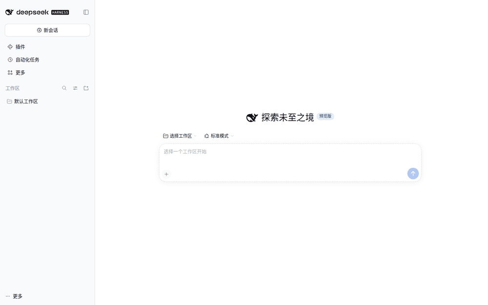

Let an AI lead
run your AI team
Tell it the goal. The lead splits work, picks members, assigns tasks, tracks progress and summarizes the result. Close the window or restart DSH: members and messages stay.
Latest version: v0.8.1 (npm latest / GitHub Release); this page is written for that version.

What it does for you
Each member keeps its own context; new tasks go straight to the right role.
The lead splits work, coordinates, tracks progress; you read the summary.
Members and messages are stored locally; restart DSH and continue.
Any team type
Not only development. Novel, video, research, operations — change roles and tasks, not the plugin.
Editor-in-chief, outline, writer, editor, proofreader, reviewer.
Lead, planning, script, editing, cover, publishing.
Lead, developer, tester, acceptance.
You do not need to know the roles first. Say “build a novel team and set up its workflow and mechanisms”; the lead proposes the team shape first.
Two ways: use the lines plugin only, or also add the dsh official Agent Teams
One sentence: the lines plugin = long-term employees (they remember, they are replaceable); dsh official Agent Teams = temporary helpers (released when done). Start with either; both are explained below.
You just want roles that remember the background and messages that never get lost. Enough, and simplest.
You also want a role to fire up a few helpers for a big batch. Faster on big work, no waste on small work.
Install the lines plugin first; later, when you hit "write three chapters / review five proposals at once", add the dsh official Agent Teams. Usage stays the same.
Way 1: lines plugin only — one person running a long-lived team
No parallelism, no task board: just "someone remembers the context" and "tasks never disappear". This layer is enough.
Org shape (lines plugin only)
manager (you only state the goal)
└─ role lines: editor-in-chief / writer / proofreader / ops… (long-lived, remembers, replaceable)
└─ no temporary team: the role line finishes the work itself
Each role keeps its own long-term memory; new tasks do not need the story retold.
Messages are stored locally and survive restarts; you can query, acknowledge, and trace where work stalled.
When a session fills up, write a handoff note and swap in a fresh session; work continues, memory is kept.
Best for: serialized novels, video series, long development/research/operations projects.
Value in one line: from "explain everything again in a new chat" to "a team that remembers".
Way 2: lines plugin + dsh official Agent Teams — big work in parallel, small work untouched
When a role has a big batch (write 3 chapters, compare 5 proposals), it can spin up a few helpers inside its own session, work in parallel, and release them.
manager (you only state the goal)
└─ role lines: writer / proofreader / ops… (long-lived, remembers)
└─ temporary team: only when parallel work pays off, released after
The role does it itself by default (cheaper); it opens a temporary team only for ≥3 independent chunks, competing proposals, or an independent review.
The official task board is synced read-only; you never re-enter tasks twice.
The team is temporary; roles and history stay. Swapping a person or restarting changes nothing.
Which work stays on the role line (level 2), and which is split to a temporary team (level 3)?
Work that needs long-term memory (continue the same book, keep the facts straight); a small task that fits one turn; work that writes the same files; the final acceptance you care about.
Work that splits into ≥3 independent chunks (write 3 chapters, build 5 modules); competing proposals or cross-review; an independent review/proofread; a tight deadline where parallel work clearly wins.
Do it yourself by default; open a team only when it splits cleanly and parallelism really saves time. The team is released afterwards; the role stays.
Best for: writing several chapters, reviewing several proposals, comparing options, tight deadlines.
Value in one line: big work in parallel saves time; small work stays simple and cheap.
Boundary: Agent Teams is experimental; tasks are read-only synced, never written back, and the official plugin's capability limits are unchanged. This is a community plugin, not an official DeepSeek product.
Install: let DSH do it
In a new DSH session, say:
Check and install the GitHub plugin Lencen/dsh-agent-lines. Use only the official repo or official npm package; do not install from forks. Before running anything, show me the command and wait for my confirmation. After install, load it as required; if DSH Web must restart, first tell me which URL to open, how to start a new session, and what to say first, and warn me that this session will disconnect. Wait for my confirmation before restarting.
Prefer manual install? Command
curl -fsSL https://raw.githubusercontent.com/Lencen/dsh-agent-lines/main/install.sh -o install.sh && bash install.sh
Restart DSH Web after install so the plugin loads.
How to start
Use the flow above; restart DSH Web when asked.
Tell the lead what kind of team you want.
The lead proposes team shape and workflow; confirm or add roles.
Say:
Build a novel team and set up its workflow and mechanisms. or Build a development team and set up its development workflow and mechanisms.
If you have specific roles, add:
Also add a proofreader and a reviewer.
First prompts
Novel:
Build a novel team and set up its workflow and mechanisms. Do not write the novel yet; wait for my first chapter task.
Video:
Build a video team and set up its workflow and mechanisms. Do not start yet; wait for my first topic.
Development:
Build a development team and set up its development workflow and mechanisms. Do not start yet; wait for my first requirement.
FAQ
You pay for actual usage; the lead proposes a minimal team first and expands later.
No. Members and messages are stored locally; continue after restart.
One plugin instance supports one team. Use separate environments for novel and video.